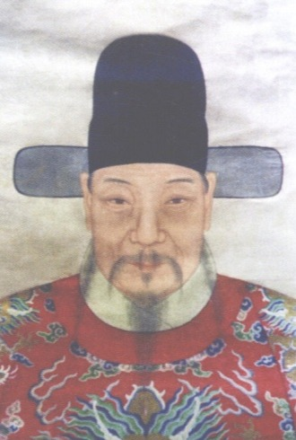

仕宦录
1.进士名录
卢睿——明永乐丁酉（1417）举人习易经，辛丑（1421）曾鹤龄榜进士，右副都御史，正三品。
卢格——明成化丁酉（1477）举人习春秋，辛丑（1481）王华榜进士，江西监察御史，巡按广东，正五品。
卢煦——明成化癸卯（1483）举人习易经，正德戊辰（1508）吕柟榜进士，湖广右参议，从四品。
卢孝达——明嘉靖甲午（1534）举人习易经，乙未（1535）韩应龙榜进士，四川提刑按察副使，正四品。
卢仲佃——明嘉靖壬子（1552）举人习易经，丙辰（1556）诸大绶榜进士，广西右布政使，从二品。
卢洪春——明万历癸酉（1573）举人习易经，丁丑（1577）沈懋学榜进士，礼部祠祭司主事，建言廷杖，追赠太仆寺少卿。
卢洪珪——明万历丁酉（1597）举人习易经，癸丑（1613）周延儒榜进士，福建右布政使，从二品。
卢炳涛——清嘉庆辛酉（1801）举人习五经，壬戌（1802）吴廷琛榜进士，翰林院庶吉士，户部郎中，江南道监察御史，正五品。
2.举人名录
卢楷——明天顺壬午（1462）解元习春秋，国子监太学生。
卢斡——明弘治壬子（1477）举人习礼记，五河县知县。
卢楫——明弘治壬子（1492）举人习易经，邳州学正。
卢森——明弘治戊午（1498）举人习易经。
卢仲鏊——明嘉靖辛酉（1561）举人习易经。
卢洪夏——明嘉靖甲子（1564）举人习易经，刑部广东司员外郎。
卢尧询——明隆庆庚午（1570）举人习书经。
卢洪远——明万历己卯举人习易经，衡州府同知。
卢洪瀚——明万历壬午（1582）举人习易经。
卢洪豸——明万历壬子（1612）举人习书经，广东广州前卫经历。
卢发——明崇祯庚午（1630）武举。
卢懋燮——明崇祯癸酉（1633）举人习易经。
卢光晋——明崇祯丙子（1636）举人习易经，考授知县。
卢人表——清康熙癸（1713）举人习易经。
卢绂——清乾隆丙子（1756）举人习易经，拣选知县。
卢潮生——清乾隆庚寅（1770）恩科解元习书经。
卢梁——清嘉庆丙子（1810）举人习五经，萧山县训导。
卢廷扬——清嘉庆丙子（1816）武举，衢州枫岭营把总。
卢燮——清道光癸卯（1843）举人习五经，拣选知县。
卢钰——清道光己酉（1849）举人习五经。
卢堃——清光绪癸巳（1893）恩科钦赐举人。
3.宦林录
卢寔——宋平江吴县主簿，进奉议郎，审刑院院判
卢锜——宋朝奉大夫集英殿修撰
卢珪——宋秘校
卢焕——宋赐迪功郎
卢序——宋学谕
卢大振——宋魏王府郡马
卢大成——宋魏王府郡马
卢敬——元永宁巡检司巡检
卢复老——元台路阴阳学学正
卢华——明永乐初由楷书荐修大典改东宫待读，直隶凤阳府毫县知县
卢睿——明都察院右副都御史，巡抚宣大，镇守宁夏参赞军务
卢潾——明内阁中书舍人
重要人物
明清两朝，雅溪卢氏人文迭兴，群星璀璨，其中不乏权镇一方的封疆大吏，名垂青史的仁人志士，他们有的清廉爱民，造福一方；有的拒敌御寇，保家卫国；有的急公好义，乐善好施；有的辨章疏句，著书立说······在卢氏的家族发展史上，乃至历史发展长河中，写下辉煌的篇章。
1.政坛名彦
走上仕途的雅溪卢氏家族成员，从明初的卢华到清中期的卢炳涛，虽非达官显宦，但无不忠于职守，清廉自律，兢兢业业，以国为念，唯民是务。他们有的爱民如子，造福一方；有的励精图治，革新除弊；有的忠介耿直，嫉恶如仇；有的保家卫国，义不顾身，从而涌现出许多可歌可泣的人物。
2.文坛精英
雅溪卢氏家族成员中，不论是仕途得意的官僚，富甲一方的乡绅，还是隐晦不仕的隐士，清贫自守的学子，无不肆力于学，“凡天文地理，阴阳医卜，靡不研究，性理纲目、大学衍义诸书、无不淹贯。”他们不仅学有所宗，而且学有所得，学有所成者不少。
3.乡里贤达
雅溪卢氏崇尚礼乐，兴学养贤，不仅科第绵延，英才辈出，更难能可贵是这个家族深谙“树德务滋”之真谛，注重仁义道德之教化，扬善抑恶，扶正压邪。荣辱、是非、善恶分明。乐善好施，急公好义，蔚然成风，好人善事层出不穷，一些乡里贤达的美德善行流传百世。


社会交往
明清两朝，随着家族的显赫和人才的迭出，雅溪卢氏的社会交往范围不断扩大，结交的社会人物日趋增多，上至朝廷重臣，下至名彦大儒。他们中有的同朝为官，共商国事，或师友从之，研讨义理，给后人留下了许多可圈可点的趣闻轶事，也在一定程度上丰富了卢氏家族昔日风光的文化内涵。